Week9 monday
Recall definition: \(A\) is
mapping reducible to \(B\) means there is a computable function
\(f : \Sigma^* \to \Sigma^*\) such that
for all strings \(x\) in \(\Sigma^*\), \[x \in A \qquad \qquad \text{if and only if}
\qquad \qquad f(x) \in B.\] Notation: when \(A\) is mapping reducible to \(B\), we write \(A \leq_m B\).
Theorem (Sipser 5.23): If \(A \leq_m B\) and \(A\) is undecidable, then \(B\) is undecidable.
Halting problem \[HALT_{TM} = \{ \langle M, w \rangle \mid
\text{$M$ is a Turing machine, $w$ is a string, and $M$ halts on $w$}
\}\]
We will define a computable function that witnesses the mapping
reduction \(A_{TM} \leq_m
HALT_{TM}\).
Using Theorem 5.23, we can then conclude that \(HALT_{TM}\) is undecidable.
Define \(F: \Sigma^* \to \Sigma^*\)
by \[F(x) = \begin{cases}
const_{out} \qquad &\text{if $x \neq \langle M,w \rangle$ for
any Turing machine $M$ and string $w$ over the alphabet of $M$} \\
\langle M', w \rangle \qquad & \text{if $x = \langle M, w
\rangle$ for some Turing machine $M$ and string $w$ over the alphabet
of $M$.}
\end{cases}\] where \(const_{out} = \langle \includegraphics[width=1.5in]{../../resources/machines/Lect22TM1.png}
, \varepsilon \rangle\) and \(M'\) is a Turing machine that computes
like \(M\) except, if the computation
ever were to go to a reject state, \(M'\) loops instead.
\(F( \langle
\includegraphics[width=1.5in]{../../resources/machines/Lect22TM1.png}
, 001 \rangle)\) =
\(F( \langle
\includegraphics[width=2.5in]{../../resources/machines/Lect22TM2.png}
, 1 \rangle)\) =
To use this function to prove that \(A_{TM}
\leq_m HALT_{TM}\), we need two claims:
Claim (1): \(F\) is computable
Claim (2): for every \(x\), \(x \in A_{TM}\) iff \(F(x) \in HALT_{TM}\).
True or False: \(\overline{A_{TM}} \leq_m
\overline{HALT_{TM}}\)
True or False: \(HALT_{TM} \leq_m
A_{TM}\).
Week9 wednesday
Recall: \(A\) is
mapping reducible to \(B\), written \(A
\leq_m B\), means there is a computable function \(f : \Sigma^* \to \Sigma^*\) such that
for all strings \(x\) in \(\Sigma^*\), \[x \in A \qquad \qquad \text{if and only if}
\qquad \qquad f(x) \in B.\]
Theorem (Sipser 5.28): If \(A \leq_m B\) and \(B\) is recognizable, then \(A\) is recognizable.
Proof:
Corollary: If \(A \leq_m B\) and \(A\) is unrecognizable, then \(B\) is unrecognizable.
Strategy:
(i) To prove that a recognizable language \(R\) is undecidable, prove that \(A_{TM} \leq_m R\).
(ii) To prove that a co-recognizable language \(U\) is undecidable, prove that \(\overline{A_{TM}} \leq_m U\), i.e. that
\(A_{TM} \leq_m \overline{U}\).
\[E_{TM} = \{ \langle M \rangle \mid
\text{$M$ is a Turing machine and $L(M) = \emptyset$} \}\]
Example string in \(E_{TM}\) is
. Example string not in \(E_{TM}\) is .
\(E_{TM}\) is decidable /
undecidable and recognizable / unrecognizable .
\(\overline{E_{TM}}\) is decidable
/ undecidable and recognizable / unrecognizable .
Claim: \(\underline{\phantom{\hspace{1.6in}}} \leq_m
\overline{E_{TM}}\).
Proof: Need computable function \(F: \Sigma^* \to \Sigma^*\) such that \(x \in A_{TM}\) iff \(F(x) \notin E_{TM}\). Define
\(F = ``\) On input \(x\),
Type-check whether \(x = \langle M, w
\rangle\) for some TM \(M\) and
string \(w\). If so, move to step 2; if
not, output
Construct the following machine \(M'_x\):
Output \(\langle M'_x
\rangle\)."
Verifying correctness:
| \(\langle M, w
\rangle\) where \(w \in
L(M)\) |
|
|
|
| \(\langle M, w
\rangle\) where \(w \notin
L(M)\) |
|
|
|
| \(x\)
not encoding any pair of TM and string |
|
\[EQ_{TM} = \{ \langle M, M' \rangle
\mid \text{$M$ and $M'$ are both Turing machines and $L(M)
=L(M')$} \}\]
Example string in \(EQ_{TM}\) is
. Example string not in \(EQ_{TM}\) is .
\(EQ_{TM}\) is decidable /
undecidable and recognizable / unrecognizable .
\(\overline{EQ_{TM}}\) is
decidable / undecidable and recognizable / unrecognizable .
To prove, show that \(\underline{\phantom{\hspace{1.6in}}} \leq_m
EQ_{TM}\) and that \(\underline{\phantom{\hspace{1.6in}}} \leq_m
\overline{EQ_{TM}}\).
Verifying correctness:
| \(\langle M, w
\rangle\) where \(M\) halts on
\(w\) |
|
|
|
| \(\langle M, w
\rangle\) where \(M\) loops on
\(w\) |
|
|
|
| \(x\)
not encoding any pair of TM and string |
|
Week9 friday
In practice, computers (and Turing machines) don’t have infinite
tape, and we can’t afford to wait unboundedly long for an answer.
“Decidable" isn’t good enough - we want “Efficiently decidable".
For a given algorithm working on a given input, how long do we need
to wait for an answer? How does the running time depend on the input in
the worst-case? average-case? We expect to have to spend more time on
computations with larger inputs.
A language is recognizable if
A language is decidable if
A language is efficiently decidable if
A function is computable if
A function is efficiently computable if
Definition (Sipser 7.1): For \(M\) a
deterministic decider, its running time is
the function \(f: \mathbb{N} \to
\mathbb{N}\) given by \[f(n)
= \text{max number of steps $M$ takes before halting, over all
inputs of length $n$}\]
Definition (Sipser 7.7): For each function \(t(n)\), the time complexity
class \(TIME(t(n))\),
is defined by \[TIME( t(n)) = \{ L \mid
\text{$L$ is decidable by a Turing machine with running time
in $O(t(n))$} \}\]
An example of an element of \(TIME( 1 )\) is
An example of an element of \(TIME( n )\) is
Note: \(TIME( 1) \subseteq TIME
(n) \subseteq TIME(n^2)\)
Definition (Sipser 7.12) : \(P\) is
the class of languages that are decidable in polynomial time on a
deterministic 1-tape Turing machine \[P = \bigcup_k TIME(n^k)\]
Compare to exponential time: brute-force
search.
Theorem (Sipser 7.8): Let \(t(n)\)
be a function with \(t(n) \geq n\).
Then every \(t(n)\) time deterministic
multitape Turing machine has an equivalent \(O(t^2(n))\) time deterministic 1-tape
Turing machine.
Definition (Sipser 7.9): For \(N\) a
nodeterministic decider. The running time
of \(N\) is the function \(f: \mathbb{N} \to \mathbb{N}\) given by
\[f(n) = \text{max number of steps $N$
takes on any branch before halting, over all inputs of length
$n$}\]
Definition (Sipser 7.21): For each function \(t(n)\), the nondeterministic
time complexity class \(NTIME(t(n))\), is defined by \[NTIME( t(n)) = \{ L \mid \text{$L$ is decidable
by a nondeterministic Turing machine with running time in $O(t(n))$}
\}\] \[NP = \bigcup_k
NTIME(n^k)\]
True or
False: \(TIME(n^2) \subseteq NTIME(n^2)\)
True or
False: \(NTIME(n^2) \subseteq DTIME(n^2)\)
Examples in \(P\)
Can’t use nondeterminism; Can use multiple tapes; Often
need to be “more clever” than naïve / brute force approach
\[PATH = \{\langle G,s,t\rangle \mid
\textrm{$G$ is digraph with $n$ nodes there is path from s to
t}\}\] Use breadth first search to show in \(P\) \[RELPRIME =
\{ \langle x,y\rangle \mid \textrm{$x$ and $y$ are relatively prime
integers}\}\] Use Euclidean Algorithm to show in \(P\) \[L(G) = \{w
\mid \textrm{$w$ is generated by $G$}\}\] (where \(G\) is a context-free grammar). Use dynamic
programming to show in \(P\).
Examples in \(NP\)
“Verifiable" i.e. NP, Can be decided by a nondeterministic
TM in polynomial time, best known deterministic solution may be
brute-force, solution can be verified by a deterministic TM in
polynomial time.
\[HAMPATH = \{\langle G,s,t \rangle \mid
\textrm{$G$ is digraph with $n$ nodes, there is path
from $s$ to $t$ that goes through every node exactly once}\}\]
\[VERTEX-COVER = \{ \langle G,k\rangle \mid
\textrm{$G$ is an undirected graph with $n$
nodes that has a $k$-node vertex cover}\}\] \[CLIQUE = \{ \langle G,k\rangle \mid \textrm{$G$
is an undirected graph with $n$ nodes that has a $k$-clique}\}\]
\[SAT =\{ \langle X \rangle \mid \textrm{$X$
is a satisfiable Boolean formula with $n$ variables}\}\]
Week8 monday
Theorem: \(A_{TM}\) is not Turing-decidable.
Proof: Suppose towards a
contradiction that there is a Turing machine that
decides \(A_{TM}\). We call this
presumed machine \(M_{ATM}\).
By assumption, for every Turing machine \(M\) and every string \(w\)
If \(w \in L(M)\), then the
computation of \(M_{ATM}\) on \(\langle M,w \rangle ~~
\underline{\phantom{\hspace{2.5in}}}\)
If \(w \notin L(M)\), then the
computation of \(M_{ATM}\) on \(\langle M,w \rangle ~~
\underline{\phantom{\hspace{2.5in}}}\)
Define a new Turing machine using the
high-level description:
\(D =\)“ On input \(\langle M \rangle\), where \(M\) is a Turing machine:
Run \(M_{ATM}\) on \(\langle M, \langle M
\rangle \rangle\).
If \(M_{ATM}\) accepts, reject;
if \(M_{ATM}\) rejects,
accept."
Is \(D\) a Turing machine?
Is \(D\) a decider?
What is the result of the computation of \(D\) on \(\langle
D \rangle\)?
Theorem (Sipser Theorem 4.22): A
language is Turing-decidable if and only if both it and its complement
are Turing-recognizable.
Proof, first direction: Suppose
language \(L\) is Turing-decidable. WTS
that both it and its complement are Turing-recognizable.
Proof, second direction: Suppose
language \(L\) is Turing-recognizable,
and so is its complement. WTS that \(L\) is Turing-decidable.
Give an example of a decidable set:
Give an example of a recognizable
undecidable set:
Give an example of an unrecognizable
set:
True or
False: The class of Turing-decidable
languages is closed under complementation?
Definition: A language \(L\) over an
alphabet \(\Sigma\) is called
co-recognizable if its complement, defined
as \(\Sigma^* \setminus L = \{
x \in \Sigma^* \mid x \notin L \}\), is
Turing-recognizable.
Notation: The complement of a set \(X\) is denoted with a superscript \(c\), \(X^c\), or an overline, \(\overline{X}\).
Week8 wednesday
Mapping reduction
Motivation: Proving that \(A_{TM}\)
is undecidable was hard. How can we leverage that work? Can we relate
the decidability / undecidability of one problem to another?
If problem \(X\) is no
harder than problem \(Y\)
…and if \(Y\) is easy,
…then \(X\) must be easy too.
If problem \(X\) is no
harder than problem \(Y\)
…and if \(X\) is hard,
…then \(Y\) must be hard too.
“Problem \(X\) is no harder than
problem \(Y\)” means “Can answer
questions about membership in \(X\) by
converting them to questions about membership in \(Y\)”.
Definition: \(A\) is
mapping reducible to \(B\) means there is a computable function
\(f : \Sigma^* \to \Sigma^*\) such that
for all strings \(x\) in \(\Sigma^*\), \[x \in A \qquad \qquad \text{if and only if}
\qquad \qquad f(x) \in B.\] Notation: when \(A\) is mapping reducible to \(B\), we write \(A \leq_m B\).
Intuition: \(A \leq_m
B\) means \(A\) is no harder
than \(B\), i.e. that the level of
difficulty of \(A\) is less than or
equal the level of difficulty of \(B\).
Computable functions
Definition: A function \(f: \Sigma^* \to
\Sigma^*\) is a computable function
means there is some Turing machine such that, for each \(x\), on input \(x\) the Turing machine halts with exactly
\(f(x)\) followed by all blanks on the
tape
Examples of computable functions:
The function that maps a string to a string which is one character
longer and whose value, when interpreted as a fixed-width binary
representation of a nonnegative integer is twice the value of the input
string (when interpreted as a fixed-width binary representation of a
non-negative integer) \[f_1: \Sigma^* \to
\Sigma^* \qquad f_1(x) = x0\]
To prove \(f_1\) is computable
function, we define a Turing machine computing it.
High-level description
“On input \(w\)
1. Append \(0\) to \(w\).
2. Halt.”
Implementation-level description
“On input \(w\)
1. Sweep read-write head to the right until find first blank
cell.
2. Write 0.
3. Halt.”
Formal definition \((\{q0, qacc, qrej\}, \{0,1\},
\{0,1,\textvisiblespace\},\delta, q0, qacc, qrej)\) where \(\delta\) is specified by the state
diagram:
The function that maps a string to the result of repeating the string
twice. \[f_2: \Sigma^* \to \Sigma^* \qquad
f_2( x ) = xx\]
The function that maps strings that are not the codes of Turing
machines to the empty string and that maps strings that code Turing
machines to the code of the related Turing machine that acts like the
Turing machine coded by the input, except that if this Turing machine
coded by the input tries to reject, the new machine will go into a loop.
\[f_3: \Sigma^* \to \Sigma^* \qquad f_3( x
) = \begin{cases} \varepsilon \qquad&\text{if $x$ is not the
code of a TM} \\
\langle (Q \cup \{q_{trap} \}, \Sigma, \Gamma, \delta', q_0,
q_{acc}, q_{rej} ) \rangle \qquad&\text{if $x = \langle (Q, \Sigma,
\Gamma, \delta, q_0, q_{acc}, q_{rej} )\rangle$}\end{cases}\]
where \(q_{trap} \notin Q\) and \[\delta'( (q,x) ) = \begin{cases}
(r,y,d) &\text{if $q \in Q$, $x \in \Gamma$, $\delta ((q,x)) =
(r,y,d)$, and $r \neq q_{rej}$} \\
(q_{trap}, \textvisiblespace, R) & \text{otherwise}
\end{cases}\]
The function that maps strings that are not the codes of CFGs to the
empty string and that maps strings that code CFGs to the code of a PDA
that recognizes the language generated by the CFG.
Other examples?
Week8 friday
Recall definition: \(A\) is
mapping reducible to \(B\) means there is a computable function
\(f : \Sigma^* \to \Sigma^*\) such that
for all strings \(x\) in \(\Sigma^*\), \[x \in A \qquad \qquad \text{if and only if}
\qquad \qquad f(x) \in B.\] Notation: when \(A\) is mapping reducible to \(B\), we write \(A \leq_m B\).
Intuition: \(A \leq_m
B\) means \(A\) is no harder
than \(B\), i.e. that the level of
difficulty of \(A\) is less than or
equal the level of difficulty of \(B\).
Example: \(A_{TM}
\leq_m A_{TM}\)
Example: \(A_{DFA}
\leq_m \{ ww \mid w \in \{0,1\}^* \}\)
Example: \(\{
0^i 1^j \mid i \geq 0, j \geq 0 \} \leq_m A_{TM}\)
Theorem (Sipser 5.22): If \(A \leq_m B\) and \(B\) is decidable, then \(A\) is decidable.
Theorem (Sipser 5.23): If \(A \leq_m B\) and \(A\) is undecidable, then \(B\) is undecidable.
Halting problem \[HALT_{TM} = \{ \langle M, w \rangle \mid
\text{$M$ is a Turing machine, $w$ is a string, and $M$ halts on $w$}
\}\]
Define \(F: \Sigma^* \to \Sigma^*\)
by \[F(x) = \begin{cases}
const_{out} \qquad &\text{if $x \neq \langle M,w \rangle$ for
any Turing machine $M$ and string $w$ over the alphabet of $M$} \\
\langle M', w \rangle \qquad & \text{if $x = \langle M, w
\rangle$ for some Turing machine $M$ and string $w$ over the alphabet
of $M$.}
\end{cases}\] where \(const_{out} = \langle \includegraphics[width=1.5in]{../../resources/machines/Lect22TM1.png}
, \varepsilon \rangle\) and \(M'\) is a Turing machine that computes
like \(M\) except, if the computation
ever were to go to a reject state, \(M'\) loops instead.
\(F( \langle
\includegraphics[width=1.5in]{../../resources/machines/Lect22TM1.png}
, 001 \rangle)\) =
\(F( \langle
\includegraphics[width=2.5in]{../../resources/machines/Lect22TM2.png}
, 1 \rangle)\) =
To use this function to prove that \(A_{TM}
\leq_m HALT_{TM}\), we need two claims:
Claim (1): \(F\) is computable
Claim (2): for every \(x\), \(x \in A_{TM}\) iff \(F(x) \in HALT_{TM}\).
Week6 monday
For Turing machine \(M= (Q, \Sigma, \Gamma,
\delta, q_0, q_{accept}, q_{reject})\) the
computation of \(M\) on a string \(w\) over \(\Sigma\) is:
Read/write head starts at leftmost position on tape.
Input string is written on \(|w|\)-many leftmost cells of tape, rest of
the tape cells have the blank symbol. Tape
alphabet is \(\Gamma\)
with \(\textvisiblespace\in \Gamma\)
and \(\Sigma \subseteq \Gamma\). The
blank symbol \(\textvisiblespace \notin
\Sigma\).
Given current state of machine and current symbol being read at
the tape head, the machine transitions to next state, writes a symbol to
the current position of the tape head (overwriting existing symbol), and
moves the tape head L or R (if possible). Formally,
transition function is \[\delta: Q\times \Gamma \to Q \times \Gamma \times
\{L, R\}\]
Computation ends if and when machine enters either the accept or
the reject state. This is called halting.
Note: \(q_{accept} \neq
q_{reject}\).
The language recognized by the Turing
machine \(M\), is \[\{ w \in \Sigma^* \mid \textrm{computation of $M$
on $w$ halts after entering the accept state}\} = \{ w \in \Sigma^* \mid
w \textrm{ is accepted by } M\}\]
To define a Turing machine, we could give a
Formal definition, namely the \(7\)-tuple of parameters including set of
states, input alphabet, tape alphabet, transition function, start state,
accept state, and reject state; or,
Implementation-level definition:
English prose that describes the Turing machine head movements relative
to contents of tape, and conditions for accepting / rejecting based on
those contents.
Conventions for drawing state diagrams of Turing machines: (1) omit
the reject state from the diagram (unless it’s the start state), (2) any
missing transitions in the state diagram have value \((q_{reject}, ~\textvisiblespace~ ,
R)\).
Sipser Figure 3.10
2
Implementation level description of this machine:
Zig-zag across tape to corresponding positions on either side of
\(\#\) to check whether the characters
in these positions agree. If they do not, or if there is no \(\#\), reject. If they do, cross them
off.
Once all symbols to the left of the \(\#\) are crossed off, check for any
un-crossed-off symbols to the right of \(\#\); if there are any, reject; if there
aren’t, accept.
Computation on input string \(01\#01\)
| \(0\) |
\(1\) |
\(\#\) |
\(0\) |
\(1\) |
\(\textvisiblespace\) |
\(\textvisiblespace\) |
|
|
|
|
|
|
|
|
|
|
|
|
|
|
|
|
|
|
|
|
|
|
|
|
|
|
|
|
|
|
|
|
|
|
|
|
|
|
|
|
|
|
|
|
|
|
|
|
|
|
|
|
|
|
|
|
|
|
|
|
|
|
|
|
|
|
|
|
|
|
|
|
|
|
|
|
|
|
|
|
|
|
|
|
|
|
|
|
|
|
|
|
|
|
|
|
|
|
|
|
|
|
|
|
|
|
|
|
|
|
|
|
|
|
|
|
|
|
|
|
|
|
|
|
|
|
|
|
|
|
|
|
|
|
|
|
|
|
|
|
|
|
|
|
The language recognized by this machine is \[\{ w \# w \mid w \in \{0,1\}^* \}\]
A language \(L\) is
recognized by a Turing machine \(M\) means
A Turing machine \(M\)
recognizes a language \(L\) if means
A Turing machine \(M\) is a
decider means
A language \(L\) is
decided by a Turing machine \(M\) means
A Turing machine \(M\)
decides a language \(L\) means
Fix \(\Sigma = \{0,1\}\), \(\Gamma = \{ 0, 1, \textvisiblespace\}\) for
the Turing machines with the following state diagrams:
| 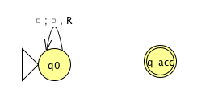 |
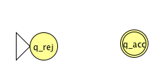 |
| Implementation level description: |
Implementation level description: |
|
|
|
|
|
|
| Example of string accepted: |
Example of string accepted: |
| Example of string rejected: |
Example of string rejected: |
|
|
| Decider? Yes / No |
Decider? Yes / No |
|
|
| 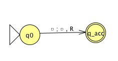 |
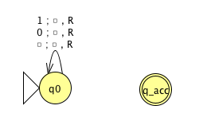 |
| Implementation level description: |
Implementation level description: |
|
|
|
|
|
|
| Example of string accepted: |
Example of string accepted: |
| Example of string rejected: |
Example of string rejected: |
|
|
| Decider? Yes / No |
Decider? Yes / No |
|
|
Week6 wednesday
Two models of computation are called equally
expressive when every language recognizable with the
first model is recognizable with the second, and vice versa.
True / False: NFAs and PDAs are equally expressive.
True / False: Regular expressions and CFGs are equally
expressive.
Some examples of models that are equally
expressive with deterministic Turing machines:
The May-stay machine model is the same as the usual Turing machine
model, except that on each transition, the tape head may move L, move R,
or Stay.
Formally: \((Q, \Sigma, \Gamma, \delta,
q_0, q_{accept}, q_{reject})\) where \[\delta: Q \times \Gamma \to Q \times \Gamma
\times \{L, R, S\}\]
Claim: Turing machines and May-stay
machines are equally expressive. To prove …
To translate a standard TM to a may-stay machine:
To translate one of the may-stay machines to standard TM: any time TM
would Stay, move right then left.
Formally: suppose \(M_S = (Q, \Sigma,
\Gamma, \delta, q_0, q_{acc}, q_{rej})\) has \(\delta: Q \times \Gamma \to Q \times \Gamma \times
\{L, R, S\}\). Define the Turing-machine \[M_{new}
= (\phantom{\hspace{2.5in}})\]
A multitape Turing macihne with \(k\) tapes can be formally representated as
\((Q, \Sigma, \Gamma, \delta, q_0, q_{acc},
q_{rej})\) where \(Q\) is the
finite set of states, \(\Sigma\) is the
input alphabet with \(\textvisiblespace \notin
\Sigma\), \(\Gamma\) is the tape
alphabet with \(\Sigma \subsetneq
\Gamma\) , \(\delta: Q\times
\Gamma^k\to Q \times \Gamma^k \times \{L,R\}^k\) (where \(k\) is the number of states)
If \(M\) is a standard TM, it is a
\(1\)-tape machine.
To translate a \(k\)-tape machine to
a standard TM: Use a new symbol to separate the contents of each tape
and keep track of location of head with special version of each tape
symbol. Sipser Theorem 3.13
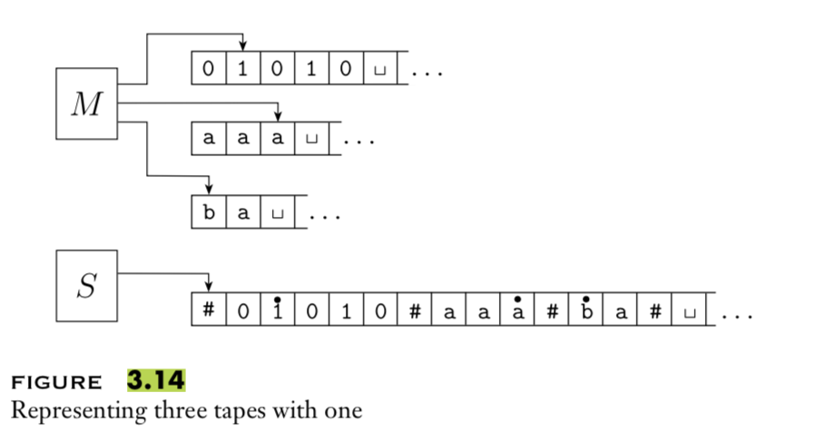
Extra practice: Define a machine \((Q, \Gamma, b, \Sigma, q_0, F, \delta)\)
where \(Q\) is the finite set of states
\(\Gamma\) is the tape alphabet, \(b \in \Gamma\) is the blank symbol, \(\Sigma \subsetneq \Gamma\) is the input
alphabet, \(q_0 \in Q\) is the start
state, \(F \subseteq Q\) is the set of
accept states, \(\delta: (Q \setminus
F) \times \Gamma \not\to Q \times \Gamma \times \{L, R\}\) is
a partial transition function If computation enters a state in \(F\), it accepts If computation enters a
configuration where \(\delta\) is not
defined, it rejects . Hopcroft and Ullman, cited by
Wikipedia
Enumerators give a different model of computation where a language is
produced, one string at a time, rather
than recognized by accepting (or not) individual strings.
Each enumerator machine has finite state control, unlimited work
tape, and a printer. The computation proceeds according to transition
function; at any point machine may “send” a string to the printer. \[E = (Q, \Sigma, \Gamma, \delta, q_0,
q_{print})\] \(Q\) is the finite
set of states, \(\Sigma\) is the output
alphabet, \(\Gamma\) is the tape
alphabet (\(\Sigma \subsetneq\Gamma,
\textvisiblespace \in \Gamma \setminus \Sigma\)), \[\delta: Q \times \Gamma \times \Gamma \to Q
\times \Gamma \times \Gamma \times \{L, R\} \times \{L, R\}\]
where in state \(q\), when the working
tape is scanning character \(x\) and
the printer tape is scanning character \(y\), \(\delta(
(q,x,y) ) = (q', x', y', d_w, d_p)\) means transition
to control state \(q'\), write
\(x'\) on the working tape, write
\(y'\) on the printer tape, move in
direction \(d_w\) on the working tape,
and move in direction \(d_p\) on the
printer tape. The computation starts in \(q_0\) and each time the computation enters
\(q_{print}\) the string from the
leftmost edge of the printer tape to the first blank cell is considered
to be printed.
The language enumerated by \(E\), \(L(E)\), is \(\{ w
\in \Sigma^* \mid \text{$E$ eventually, at finite time,
prints $w$} \}\).
cc 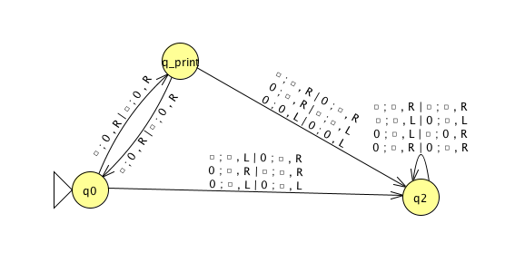 &
| \(\textvisiblespace ~*\) |
\(\textvisiblespace\) |
\(\textvisiblespace\) |
\(\textvisiblespace\) |
\(\textvisiblespace\) |
\(\textvisiblespace\) |
\(\textvisiblespace\) |
| \(\textvisiblespace ~*\) |
\(\textvisiblespace\) |
\(\textvisiblespace\) |
\(\textvisiblespace\) |
\(\textvisiblespace\) |
\(\textvisiblespace\) |
\(\textvisiblespace\) |
|
|
|
|
|
|
|
|
|
|
|
|
|
|
|
|
|
|
|
|
|
|
|
|
|
|
|
|
|
|
|
|
|
|
|
|
|
|
|
|
|
|
|
|
|
|
|
|
|
|
|
|
|
|
|
|
|
|
|
|
Theorem 3.21 A language is
Turing-recognizable iff some enumerator enumerates it. Proof
next time …
Week6 friday
To define a Turing machine, we could give a
Formal definition: the \(7\)-tuple of parameters including set of
states, input alphabet, tape alphabet, transition function, start state,
accept state, and reject state; or,
Implementation-level definition:
English prose that describes the Turing machine head movements relative
to contents of tape, and conditions for accepting / rejecting based on
those contents.
High-level description: description
of algorithm (precise sequence of instructions), without implementation
details of machine. As part of this description, can “call" and run
another TM as a subroutine.
Theorem 3.21 A language is
Turing-recognizable iff some enumerator enumerates it.
Proof:
Assume \(L\) is enumerated by some
enumerator, \(E\), so \(L = L(E)\). We’ll use \(E\) in a subroutine within a high-level
description of a new Turing machine that we will build to recognize
\(L\).
Goal: build Turing machine \(M_E\) with \(L(M_E) = L(E)\).
Define \(M_E\) as follows: \(M_E =\) “On input \(w\),
Run \(E\). For each string \(x\) printed by \(E\).
Check if \(x = w\). If so,
accept (and halt); otherwise, continue."
Assume \(L\) is Turing-recognizable
and there is a Turing machine \(M\)
with \(L = L(M)\). We’ll use \(M\) in a subroutine within a high-level
description of an enumerator that we will build to enumerate \(L\).
Goal: build enumerator \(E_M\) with \(L(E_M) = L(M)\).
Idea: check each string in turn to see
if it is in \(L\).
How? Run computation of \(M\) on each string.
But: need to be careful about computations that
don’t halt.
Recall String order for \(\Sigma = \{0,1\}\): \(s_1 = \varepsilon\), \(s_2 = 0\), \(s_3
= 1\), \(s_4 = 00\), \(s_5 = 01\), \(s_6 = 10\), \(s_7 = 11\), \(s_8 = 000\), …
Define \(E_M\) as follows: \(E_{M} =\) “ ignore any
input. Repeat the following for \(i=1, 2, 3, \ldots\)
Run the computations of \(M\) on
\(s_1\), \(s_2\), …, \(s_i\) for (at most) \(i\) steps each
For each of these \(i\)
computations that accept during the (at most) \(i\) steps, print out the accepted
string."
Nondeterministic Turing machine
At any point in the computation, the nondeterministic machine may
proceed according to several possibilities: \((Q, \Sigma, \Gamma, \delta, q_0, q_{acc},
q_{rej})\) where \[\delta: Q \times
\Gamma \to \mathcal{P}(Q \times \Gamma \times \{L, R\})\] The
computation of a nondeterministic Turing machine is a tree with
branching when the next step of the computation has multiple
possibilities. A nondeterministic Turing machine accepts a string
exactly when some branch of the computation tree enters the accept
state.
Given a nondeterministic machine, we can use a \(3\)-tape Turing machine to simulate it by
doing a breadth-first search of computation tree: one tape is
“read-only” input tape, one tape simulates the tape of the
nondeterministic computation, and one tape tracks nondeterministic
branching. Sipser page 178
Two models of computation are called equally
expressive when every language recognizable with the
first model is recognizable with the second, and vice versa.
Church-Turing Thesis (Sipser p. 183):
The informal notion of algorithm is formalized completely and correctly
by the formal definition of a Turing machine. In other words: all
reasonably expressive models of computation are equally expressive with
the standard Turing machine.
Claim: If two languages (over a fixed
alphabet \(\Sigma\)) are
Turing-recognizable, then their union is as well.
Proof using Turing machines:
Proof using nondeterministic Turing
machines:
Proof using enumerators:
Week7 monday
|
Suppose \(M\) is a TM |
Suppose \(D\) is a TM |
Suppose \(E\) is an enumerator |
|
that recognizes \(L\) |
that decides \(L\) |
that enumerates \(L\) |
| If string \(w\) is in \(L\) then … |
|
|
|
|
|
|
|
|
|
|
|
| If string \(w\) is not in \(L\) then … |
|
|
|
|
|
|
|
|
|
|
|
Describing Turing machines (Sipser p.
185)
The Church-Turing thesis posits that each algorithm can be
implemented by some Turing machine
High-level descriptions of Turing machine algorithms are written as
indented text within quotation marks.
Stages of the algorithm are typically numbered consecutively.
The first line specifies the input to the machine, which must be a
string. This string may be the encoding of some object or list of
objects.
Notation: \(\langle O \rangle\) is the string that
encodes the object \(O\). \(\langle O_1, \ldots, O_n \rangle\) is the
string that encodes the list of objects \(O_1,
\ldots, O_n\).
Assumption: There are Turing machines
that can be called as subroutines to decode the string representations
of common objects and interact with these objects as intended (data
structures).
For example, since there are algorithms to answer each of the
following questions, by Church-Turing thesis, there is a Turing machine
that accepts exactly those strings for which the answer to the question
is “yes”
Does a string over \(\{0,1\}\)
have even length?
Does a string over \(\{0,1\}\)
encode a string of ASCII characters?
Does a DFA have a specific number of states?
Do two NFAs have any state names in common?
Do two CFGs have the same start variable?
A computational problem is decidable
iff language encoding its positive problem instances is decidable.
The computational problem “Does a specific DFA accept a given
string?” is encoded by the language \[\begin{aligned}
&\{ \textrm{representations of DFAs $M$ and strings $w$ such that
$w \in L(M)$}\} \\
=& \{ \langle M, w \rangle \mid M \textrm{ is a DFA}, w \textrm{
is a string}, w \in L(M) \}
\end{aligned}\]
The computational problem “Is the language generated by a CFG empty?”
is encoded by the language \[\begin{aligned}
&\{ \textrm{representations of CFGs $G$ such that $L(G) =
\emptyset$}\} \\
=& \{ \langle G \rangle \mid G \textrm{ is a CFG}, L(G) =
\emptyset \}
\end{aligned}\]
The computational problem “Is the given Turing machine a decider?” is
encoded by the language \[\begin{aligned}
&\{ \textrm{representations of TMs $M$ such that $M$ halts on
every input}\} \\
=& \{ \langle M \rangle \mid M \textrm{ is a TM and for each
string } w, \textrm{$M$ halts on $w$} \}
\end{aligned}\]
Note: writing down the language encoding a computational
problem is only the first step in determining if it’s recognizable,
decidable, or …
Some classes of computational problems help us
understand the differences between the machine models we’ve been
studying:
| Acceptance
problem |
|
|
|
| …for DFA |
\(A_{DFA}\) |
\(\{ \langle B,w
\rangle \mid \text{$B$ is a DFA that accepts input
string $w$}\}\) |
| …for NFA |
\(A_{NFA}\) |
\(\{ \langle B,w
\rangle \mid \text{$B$ is a NFA that accepts input
string $w$}\}\) |
| …for regular expressions |
\(A_{REX}\) |
\(\{ \langle R,w
\rangle \mid \text{$R$ is a regular
expression that generates input string $w$}\}\) |
| …for CFG |
\(A_{CFG}\) |
\(\{ \langle G,w
\rangle \mid \text{$G$ is a context-free grammar
that generates input string $w$}\}\) |
| …for PDA |
\(A_{PDA}\) |
\(\{ \langle B,w
\rangle \mid \text{$B$ is a PDA that accepts input string
$w$}\}\) |
|
|
|
|
|
|
| Language
emptiness testing |
|
|
|
| …for DFA |
\(E_{DFA}\) |
\(\{ \langle A
\rangle \mid \text{$A$ is a DFA and $L(A) =
\emptyset$\}}\) |
| …for NFA |
\(E_{NFA}\) |
\(\{ \langle
A\rangle \mid \text{$A$ is a NFA and $L(A) =
\emptyset$\}}\) |
| …for regular expressions |
\(E_{REX}\) |
\(\{ \langle R
\rangle \mid \text{$R$ is a regular
expression and $L(R) = \emptyset$\}}\) |
| …for CFG |
\(E_{CFG}\) |
\(\{ \langle G
\rangle \mid \text{$G$ is a context-free grammar
and $L(G) = \emptyset$\}}\) |
| …for PDA |
\(E_{PDA}\) |
\(\{ \langle A
\rangle \mid \text{$A$ is a PDA and $L(A) =
\emptyset$\}}\) |
|
|
|
|
|
|
| Language
equality testing |
|
|
|
| …for DFA |
\(EQ_{DFA}\) |
\(\{ \langle A,
B \rangle \mid \text{$A$ and $B$ are DFAs and $L(A)
=L(B)$\}}\) |
| …for NFA |
\(EQ_{NFA}\) |
\(\{ \langle A,
B \rangle \mid \text{$A$ and $B$ are NFAs and $L(A)
=L(B)$\}}\) |
| …for regular expressions |
\(EQ_{REX}\) |
\(\{ \langle R,
R' \rangle \mid \text{$R$ and $R'$ are regular
expressions and $L(R) =L(R')$\}}\) |
| …for CFG |
\(EQ_{CFG}\) |
\(\{ \langle G,
G' \rangle \mid \text{$G$ and $G'$ are CFGs and $L(G)
=L(G')$\}}\) |
| …for PDA |
\(EQ_{PDA}\) |
\(\{ \langle A,
B \rangle \mid \text{$A$ and $B$ are PDAs and $L(A)
=L(B)$\}}\) |
| Sipser Section 4.1 |
|
|
| \(M_1\)
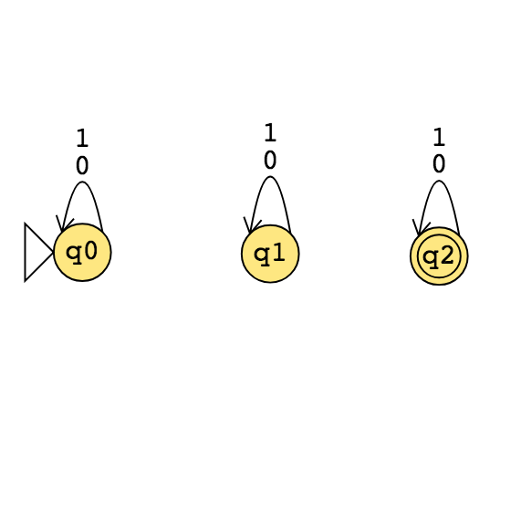 |
\(M_2\)
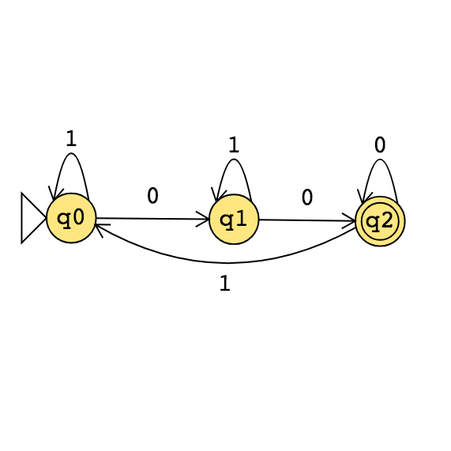 |
\(M_3\)
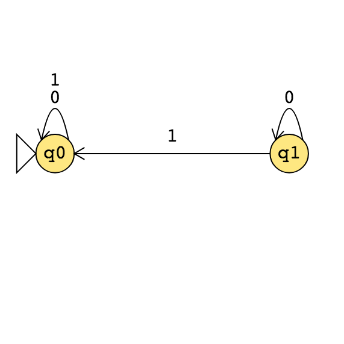 |
|
|
|
|
|
|
|
|
|
|
|
|
Example strings in \(A_{DFA}\)
Example strings in \(E_{DFA}\)
Example strings in \(EQ_{DFA}\)
Food for thought: which of the following computational problems are
decidable: \(A_{DFA}\)?, \(E_{DFA}\)?, \(EQ_{DFA}\)?
Week7 wednesday
Deciding a computational problem means building / defining a Turing
machine that recognizes the language encoding the computational problem,
and that is a decider.
| Acceptance
problem |
| for … |
\(A_{\ldots}\) |
\(\{ \langle B,w
\rangle \mid \text{$B$ is a \ldots that accepts input
string $w$}\}\) |
| Language
emptiness testing |
| for … |
\(E_{\ldots}\) |
\(\{ \langle A
\rangle \mid \text{$A$ is a \ldots and $L(A) =
\emptyset$\}}\) |
| Language
equality testing |
| for … |
\(EQ_{\ldots}\) |
\(\{ \langle A,
B \rangle \mid \text{$A$ and $B$ are \ldots and $L(A)
=L(B)$\}}\) |
| Sipser Section 4.1 |
|
|
\(M_1 =\) “On input \(\langle M,w\rangle\), where \(M\) is a DFA and \(w\) is a string:
Type check encoding to check input is correct type.
Simulate \(M\) on input \(w\) (by keeping track of states in \(M\), transition function of \(M\), etc.)
If the simulations ends in an accept state of \(M\), accept. If it ends in a non-accept
state of \(M\), reject. "
What is \(L(M_1)\)?
Is \(L(M_1)\) a decider?
\(M_2 =\)“On input \(\langle M, w \rangle\) where \(M\) is a DFA and \(w\) is a string,
Run \(M\) on input \(w\).
If \(M\) accepts, accept; if
\(M\) rejects, reject."
What is \(L(M_2)\)?
Is \(M_2\) a decider?
\(A_{REX} =\)
\(A_{NFA} =\)
True / False: \(A_{REX} = A_{NFA} =
A_{DFA}\)
True / False: \(A_{REX} \cap A_{NFA} =
\emptyset\), \(A_{REX} \cap A_{DFA} =
\emptyset\), \(A_{DFA} \cap A_{NFA} =
\emptyset\)
A Turing machine that decides \(A_{NFA}\) is:
A Turing machine that decides \(A_{REX}\) is:
\(M_3 =\)“On input \(\langle M\rangle\) where \(M\) is a DFA,
For integer \(i = 1, 2,
\ldots\)
Let \(s_i\) be the \(i\)th string over the alphabet of \(M\) (ordered in string order).
Run \(M\) on input \(s_i\).
If \(M\) accepts, \(\underline{\phantom{FILL IN BLANK}}\). If
\(M\) rejects, increment \(i\) and keep going."
Choose the correct option to help fill in the blank so that \(M_3\) recognizes \(E_{DFA}\)
\(M_4 =\) “ On input \(\langle M \rangle\) where \(M\) is a DFA,
Mark the start state of \(M\).
Repeat until no new states get marked:
Loop over the states of \(M\).
Mark any unmarked state that has an incoming edge from a marked
state.
If no accept state of \(A\) is
marked, \(\underline{\phantom{FILL IN
BLANK}}\); otherwise, \(\underline{\phantom{FILL IN
BLANK}}\)".
To build a Turing machine that decides \(EQ_{DFA}\), notice that \[L_1 = L_2 \qquad\textrm{iff}\qquad (~(L_1 \cap
\overline{L_2}) \cup (L_2 \cap \overline L_1)~) = \emptyset\]
There are no elements that are in one set and not the
other
\(M_{EQDFA} =\)
Summary: We can use the decision
procedures (Turing machines) of decidable problems as subroutines in
other algorithms. For example, we have subroutines for deciding each of
\(A_{DFA}\), \(E_{DFA}\), \(EQ_{DFA}\). We can also use algorithms for
known constructions as subroutines in other algorithms. For example, we
have subroutines for: counting the number of states in a state diagram,
counting the number of characters in an alphabet, converting DFA to a
DFA recognizing the complement of the original language or a DFA
recognizing the Kleene star of the original language, constructing a DFA
or NFA from two DFA or NFA so that we have a machine recognizing the
language of the union (or intersection, concatenation) of the languages
of the original machines; converting regular expressions to equivalent
DFA; converting DFA to equivalent regular expressions, etc.
Week7 friday
| Acceptance
problem |
|
|
|
| …for DFA |
\(A_{DFA}\) |
\(\{ \langle B,w
\rangle \mid \text{$B$ is a DFA that accepts input
string $w$}\}\) |
| …for NFA |
\(A_{NFA}\) |
\(\{ \langle B,w
\rangle \mid \text{$B$ is a NFA that accepts input
string $w$}\}\) |
| …for regular expressions |
\(A_{REX}\) |
\(\{ \langle R,w
\rangle \mid \text{$R$ is a regular
expression that generates input string $w$}\}\) |
| …for CFG |
\(A_{CFG}\) |
\(\{ \langle G,w
\rangle \mid \text{$G$ is a context-free grammar
that generates input string $w$}\}\) |
| …for PDA |
\(A_{PDA}\) |
\(\{ \langle B,w
\rangle \mid \text{$B$ is a PDA that accepts input string
$w$}\}\) |
|
|
|
|
|
|
| Acceptance
problem |
| for Turing machines |
\(A_{TM}\) |
\(\{ \langle M,w
\rangle \mid \text{$M$ is a Turing machine that accepts input
string $w$}\}\) |
| Language
emptiness testing |
| for Turing machines |
\(E_{TM}\) |
\(\{ \langle M
\rangle \mid \text{$M$ is a Turing machine and $L(M) =
\emptyset$\}}\) |
| Language
equality testing |
| for Turing machines |
\(EQ_{TM}\) |
\(\{
\langle M_1, M_2 \rangle \mid \text{$M_1$ and $M_2$ are Turing
machines and
$L(M_1) =L(M_2)$\}}\) |
| Sipser Section 4.1 |
|
|
3 \(M_1\) 
\(M_2\) 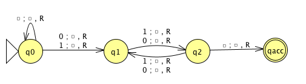
\(M_3\) 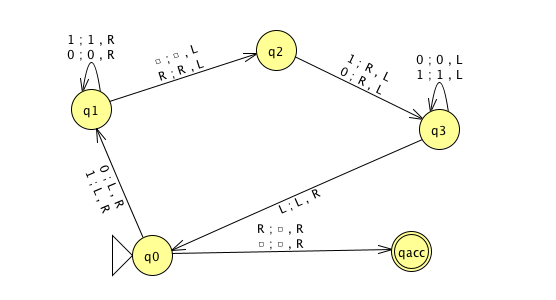
Example strings in \(A_{TM}\)
Example strings in \(E_{TM}\)
Example strings in \(EQ_{TM}\)
Theorem: \(A_{TM}\) is Turing-recognizable.
Strategy: To prove this theorem, we
need to define a Turing machine \(R_{ATM}\) such that \(L(R_{ATM}) = A_{TM}\).
Define \(R_{ATM} =\) “
Proof of correctness:
We will show that \(A_{TM}\) is
undecidable. First, let’s explore what that
means.
A Turing-recognizable language is a set
of strings that is the language recognized by some Turing machine. We
also say that such languages are recognizable.
A Turing-decidable language is a set of
strings that is the language recognized by some decider. We also say
that such languages are decidable.
An unrecognizable language is a
language that is not Turing-recognizable.
An undecidable language is a language
that is not Turing-decidable.
True or
False: Any undecidable language is also
unrecognizable.
True or
False: Any unrecognizable language is also
undecidable.
To prove that a computational problem is
decidable, we find/ build a Turing machine
that recognizes the language encoding the computational problem, and
that is a decider.
How do we prove a specific problem is not
decidable?
How would we even find such a computational problem?
Counting arguments for the existence of an undecidable
language:
The set of all Turing machines is countably infinite.
Each Turing-recognizable language is associated with a Turing
machine in a one-to-one relationship, so there can be no more
Turing-recognizable languages than there are Turing machines.
Since there are infinitely many Turing-recognizable languages
(think of the singleton sets), there are countably infinitely many
Turing-recognizable languages.
Such the set of Turing-decidable languages is an infinite subset
of the set of Turing-recognizable languages, the set of Turing-decidable
languages is also countably infinite.
Since there are uncountably many languages (because \(\mathcal{P}(\Sigma^*)\) is uncountable),
there are uncountably many unrecognizable languages and there are
uncountably many undecidable languages.
Thus, there’s at least one undecidable language!
What’s a specific example of a language that is
unrecognizable or undecidable?
To prove that a language is undecidable, we need to prove that there
is no Turing machine that decides it.
Key idea: proof by contradiction
relying on self-referential disagreement.
Week10 wednesday
Recall: For \(M\) a deterministic
decider, its running time is the function
\(f: \mathbb{N} \to \mathbb{N}\) given
by \[f(n) = \text{max number of steps $M$
takes before halting, over all inputs of length $n$}\] For each
function \(t(n)\), the
time complexity class \(TIME(t(n))\), is defined by \[TIME( t(n)) = \{ L \mid \text{$L$ is decidable
by a Turing machine with running time in $O(t(n))$} \}\] \(P\) is the class of languages that are
decidable in polynomial time on a deterministic 1-tape Turing machine
\[P = \bigcup_k TIME(n^k)\]
Definition (Sipser 7.9): For \(N\) a
nodeterministic decider. The running time
of \(N\) is the function \(f: \mathbb{N} \to \mathbb{N}\) given by
\[f(n) = \text{max number of steps $N$
takes on any branch before halting, over all inputs of length
$n$}\]
Definition (Sipser 7.21): For each function \(t(n)\), the nondeterministic
time complexity class \(NTIME(t(n))\), is defined by \[NTIME( t(n)) = \{ L \mid \text{$L$ is decidable
by a nondeterministic Turing machine with running time in $O(t(n))$}
\}\] \[NP = \bigcup_k
NTIME(n^k)\]
True or
False: \(TIME(n^2) \subseteq NTIME(n^2)\)
True or
False: \(NTIME(n^2) \subseteq DTIME(n^2)\)
Every problem in NP is decidable with an
exponential-time algorithm
Nondeterministic approach: guess a possible solution, verify that it
works.
Brute-force (worst-case exponential time) approach: iterate over all
possible solutions, for each one, check if it works.
Examples in \(P\)
Can’t use nondeterminism; Can use multiple tapes; Often
need to be “more clever” than naïve / brute force approach
\[PATH = \{\langle G,s,t\rangle \mid
\textrm{$G$ is digraph with $n$ nodes there is path from s to
t}\}\] Use breadth first search to show in \(P\) \[RELPRIME =
\{ \langle x,y\rangle \mid \textrm{$x$ and $y$ are relatively prime
integers}\}\] Use Euclidean Algorithm to show in \(P\) \[L(G) = \{w
\mid \textrm{$w$ is generated by $G$}\}\] (where \(G\) is a context-free grammar). Use dynamic
programming to show in \(P\).
Examples in \(NP\)
“Verifiable" i.e. NP, Can be decided by a nondeterministic
TM in polynomial time, best known deterministic solution may be
brute-force, solution can be verified by a deterministic TM in
polynomial time.
\[\begin{aligned}
HAMPATH &= \{\langle G,s,t \rangle \mid \textrm{$G$ is digraph
with $n$ nodes, }\\
& \qquad \textrm{there is path
from $s$ to $t$ that goes through every node exactly once}\}
\end{aligned}\] \[VERTEX-COVER = \{
\langle G,k\rangle \mid \textrm{$G$ is an undirected graph with $n$
nodes that has a $k$-node vertex cover}\}\] \[CLIQUE = \{ \langle G,k\rangle \mid \textrm{$G$
is an undirected graph with $n$ nodes that has a $k$-clique}\}\]
\[SAT =\{ \langle X \rangle \mid \textrm{$X$
is a satisfiable Boolean formula with $n$ variables}\}\]
| (Membership in any) regular
language |
Any problem in \(P\) |
| (Membership in any) context-free
language |
|
| \(A_{DFA}\) |
\(SAT\) |
| \(E_{DFA}\) |
\(CLIQUE\) |
| \(EQ_{DFA}\) |
\(VERTEX-COVER\) |
| \(PATH\) |
\(HAMPATH\) |
| \(RELPRIME\) |
\(\ldots\) |
| \(\ldots\) |
|
Million-dollar question: Is \(P =
NP\)?
One approach to trying to answer it is to look for
hardest problems in \(NP\) and then (1) if we can show that there
are efficient algorithms for them, then we can get efficient algorithms
for all problems in \(NP\) so \(P = NP\), or (2) these problems might be
good candidates for showing that there are problems in \(NP\) for which there are no efficient
algorithms.
Definition (Sipser 7.29) Language \(A\) is polynomial-time
mapping reducible to language \(B\), written \(A
\leq_P B\), means there is a polynomial-time computable function
\(f: \Sigma^* \to \Sigma^*\) such that
for every \(x \in \Sigma^*\) \[x \in A \qquad \text{iff} \qquad f(x) \in
B.\] The function \(f\) is
called the polynomial time reduction of \(A\) to \(B\).
Theorem (Sipser 7.31): If \(A \leq_P B\) and \(B \in P\) then \(A \in P\).
Proof:
Definition (Sipser 7.34; based in Stephen Cook and Leonid Levin’s
work in the 1970s): A language \(B\) is
NP-complete means (1) \(B\) is in NP
and (2) every language \(A\) in \(NP\) is polynomial time reducible to \(B\).
Theorem (Sipser 7.35): If \(B\) is NP-complete and \(B \in P\) then \(P = NP\).
Proof:
3SAT: A literal is a Boolean variable
(e.g. \(x\)) or a negated Boolean
variable (e.g. \(\bar{x}\)). A Boolean
formula is a 3cnf-formula if it is a
Boolean formula in conjunctive normal form (a conjunction of disjunctive
clauses of literals) and each clause has three literals. \[3SAT = \{ \langle \phi \rangle \mid
\text{$\phi$ is a satisfiable 3cnf-formula} \}\]
Example strings in \(3SAT\)
Example strings not in \(3SAT\)
Cook-Levin Theorem: \(3SAT\) is \(NP\)-complete.
Are there other \(NP\)-complete problems? To
prove that \(X\) is \(NP\)-complete
From scratch: prove \(X\) is in \(NP\) and that all \(NP\) problems are polynomial-time reducible
to \(X\).
Using reduction: prove \(X\) is in \(NP\) and that a known-to-be \(NP\)-complete problem is polynomial-time
reducible to \(X\).
CLIQUE: A \(k\)-clique in an undirected
graph is a maximally connected subgraph with \(k\) nodes. \[CLIQUE = \{ \langle G, k \rangle \mid \text{$G$
is an undirected graph with a $k$-clique} \}\]
Example strings in \(CLIQUE\)
Example strings not in \(CLIQUE\)
Theorem (Sipser 7.32): \[3SAT \leq_P
CLIQUE\]
Given a Boolean formula in conjunctive normal form with \(k\) clauses and three literals per clause,
we will map it to a graph so that the graph has a clique if the original
formula is satisfiable and the graph does not have a clique if the
original formula is not satisfiable.
The graph has \(3k\) vertices (one
for each literal in each clause) and an edge between all vertices
except
Example: \((x \vee \bar{y} \vee {\bar z})
\wedge (\bar{x} \vee y \vee z) \wedge (x \vee y \vee z)\)
Week10 friday
|
|
| Model of
Computation |
Class of
Languages |
|
|
|
|
| Deterministic finite
automata: formal definition, how to design for a given
language, how to describe language of a machine?
Nondeterministic finite automata: formal
definition, how to design for a given language, how to describe language
of a machine? Regular expressions: formal
definition, how to design for a given language, how to describe language
of expression? Also: converting between different
models. |
Class of regular
languages: what are the closure properties of this
class? which languages are not in the class? using pumping
lemma to prove nonregularity. |
|
|
|
|
| Push-down
automata: formal definition, how to design for a given
language, how to describe language of a machine?
Context-free grammars: formal definition,
how to design for a given language, how to describe language of a
grammar? |
Class of context-free
languages: what are the closure properties of this
class? which languages are not in the class? |
|
|
|
|
| Turing machines that always halt in
polynomial time |
\(P\) |
|
|
| Nondeterministic Turing machines that
always halt in polynomial time |
\(NP\) |
|
|
|
|
| Deciders
(Turing machines that always halt): formal definition, how to design for
a given language, how to describe language of a machine? |
Class of decidable
languages: what are the closure properties of this
class? which languages are not in the class? using diagonalization and
mapping reduction to show undecidability |
|
|
|
|
| Turing
machines formal definition, how to design for a given
language, how to describe language of a machine? |
Class of recognizable
languages: what are the closure properties of this
class? which languages are not in the class? using closure and mapping
reduction to show unrecognizability |
|
|
Given a language, prove it is
regular
Strategy 1: construct DFA recognizing the
language and prove it works.
Strategy 2: construct NFA recognizing the
language and prove it works.
Strategy 3: construct regular expression
recognizing the language and prove it works.
“Prove it works” means …
Example: \(L = \{ w \in \{0,1\}^* \mid \textrm{$w$ has odd
number of $1$s or starts with $0$}\}\)
Using NFA
Using regular expressions
Example: Select all and only the
options that result in a true statement: “To show a language \(A\) is not regular, we can…”
Show \(A\) is finite
Show there is a CFG generating \(A\)
Show \(A\) has no pumping
length
Show \(A\) is
undecidable
Example: What is the language generated
by the CFG with rules \[\begin{aligned}
S &\to aSb \mid bY \mid Ya \\
Y &\to bY \mid Ya \mid \varepsilon
\end{aligned}\]
Example: Prove that the language \(T = \{ \langle M \rangle \mid \textrm{$M$ is a
Turing machine and $L(M)$ is infinite}\}\) is undecidable.
Example: Prove that the class of
decidable languages is closed under concatenation.